|
Es ist die Kurve der Funktion 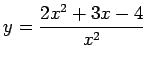 zu konstruieren:
-
Die Funktion ist für alle x-Werte außer für x =0 definiert.
-
Es gibt keinerlei Symmetrie.
-
Für 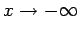 strebt 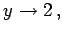 so daß y =2 -0 Annäherung von unten bedeutet, während sich für  zwar ebenfalls 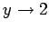 ergibt, aber y =2 +0 Annäherung von oben bedeutet.
-
Bei x =0 gibt es eine Unstetigkeitsstelle derart, daß die Kurve von links und von rechts nach  verläuft, da y für kleine x-Werte negativ ist.
-
Da 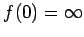 ist, gibt es keinen Schnittpunkt mit der y-Achse, während f(x) =2x2 + 3x - 4 =0 die Schnittpunkte mit der x-Achse bei 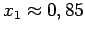 und 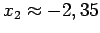 liefert.
-
Ein Maximum liegt bei 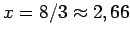 und 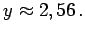
-
Ein Wendepunkt befindet sich bei x =4, y =2,5 mit 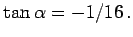
-
Nach der Skizzierung der Funktion auf Grund der gewonnenen Daten (s. Abbildung) wird der Schnittpunkt der Kurve mit der Asymptote bei 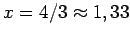 und y =2 berechnet.
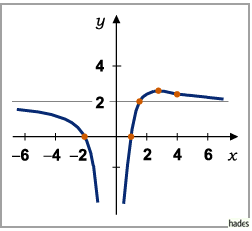
|